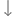

Log In UI - Components
Illustrates how to use wizard templates to create a simple UI that contains a text label, images, and push buttons.

Log In UI - Components is the first tutorial in a series of tutorials that describes how to use the Qt Design Studio wizard templates to create a project and a button UI control, and how to modify the files generated by the wizard templates to design the UI.
You can donwnload the completed project from here.
Creating the UI Project
For the purposes of this tutorial, you will use the empty wizard template. Wizard templates are available also for creating UIs that are optimized for mobile platforms and for launcher applications. For more information about the options you have, see Creating Projects.
To create a project:
- Select File > New Project.
- In the Presets tab, select General > Empty.
- In the Details tab:
- Enter Loginui1 as the name for the project. Keep in mind that projects cannot be easily renamed later.
- Select the path for the project files. You can move project folders later.
- Set Width to 720 and Height to 1280. You can change the screen size later in Properties.
- Select Create to create the project.
Your project should now look something like this in the Design mode:
The wizard constructs the Screen01 component using instances of a Rectangle component that forms the background, a Button, and a Text component that displays some text.
Note: The visibility of views depends on the selected workspace, so your Qt Design Studio might look somewhat different from the above image. To open hidden views, select View > Views in the Design mode. For more information about moving views around, see Managing Workspaces.
You should remove this Button for now from the UI to have a clean workspace. You'll add this later in the course of the tutorial. Then you shall know how to modify and adjust it as you need.
To remove this Button, just select it and press Backspace.
Next, you will edit the values of the properties of the component instances to create the main page of the UI.
Creating the Main Page
You will now change the values of the properties of the Text component instance to create a tag line using a custom font. You will add the font as an asset and set it to be used in the properties of the component. In addition, you will import a background image and logo as assets and add them to the page as instances of the Image component.
You can download the logo and the background image from here:
- qt_logo_green_128x128px.png
- Background image (adventurePage.jpg)
Photo by Benjamin DeYoung on Unsplash.
{kind=link}
{kind=link}
You can download the font from Titillium Web ExtraLight font or use Arial as a substitute.
To add the assets:
- Select Assets >
 (Select View > Views > Assets to enable it, if you can't find it).
(Select View > Views > Assets to enable it, if you can't find it). - Select the asset files, and then select Open.
- Select the location where the files will be saved in the Add Resources dialog.
- Select OK.
To preview the changes that you make to the UI while you make them, select the  (Show Live Preview) button on the 2D view toolbar or press Alt+P.
(Show Live Preview) button on the 2D view toolbar or press Alt+P.
The Screen01.ui.qml file that the wizard template created for you should be open in the Design mode. If it is not, you can double-click it in the Projects view to open it.
To modify the Screen01 component in the 2D view:
- Drag-and-drop the background image (1) from Assets to the Rectangle (2) in Navigator.
- Qt Design Studio automatically creates an instance of the Image component for you with the path to the image file set as the value of Properties > Image > Source.
- Drag-and-drop the Qt logo from Assets to the rectangle in Navigator and move it to the top-center of the background image in the 2D view.
- Select Text in Navigator and drag it below the logo in the 2D view. If the text is hidden behind the background, select  in Navigator to move the text as the last item in the component tree structure. The text should then appear on top of the background.
- Edit text properties in Properties:
- In Component > ID, enter the ID tagLine.
- In Character > Text, enter the tag line: Are you ready to explore?.
- In Font, select Titillium Web ExtraLight.
- In Size, first select the scale to pixels (px), then set font size of the tag line to 50 (px).
- In Text color, set the text color to white (#ffffff).
- Select File > Save or press Ctrl+S to save your changes.
Your UI should now look something like this in the 2D view and live preview:

You can resize the preview dialog to display the whole screen.
Creating a Push Button
You can use another wizard template to create a push button and to add it to the project. The wizard template creates a reusable button component that appears in Components > My Components. You can drag-and-drop it to Navigator to create button instances and modify their properties in the Properties view to change their appearance and functionality.
If you cannot use the wizard template nor the preset button controls available in Components > Qt Quick Controls to create the kind of push button that you want, you can create your button from scratch using default components. For more information, see Creating Buttons and Creating Scalable Buttons and Borders.
To create a push button by using the wizard template:
- Select File > New File > Qt Quick Controls > Custom Button > Choose.
- In the Component name field, enter a name for your button component: EntryField.
- Select Finish (or Done on macOS) to create the button UI file, EntryField.ui.qml.
Your button should now look something like this in the Design mode:
Note: To open the States view, select it from View > Views > States, if it is not available by default.
Next, you will change the appearance of the EntryField component by modifying its properties.
Styling the Button
You can now modify the properties of the EntryField component to your liking. To make the changes apply to all the EntryField instances, you must make them in the EntryField.ui.qml file.
The Custom Button wizard template adds a normal state and a down state to change the button background and text color when the button is clicked. You will now change the colors in all states. When you make changes to the button in the base state, they are automatically applied to the other states. However, the property values that have been explicitly changed in the normal or down state are not changed automatically and you have to either reset them to the base state or set them separately in that state.
To change the button property values:
- Select control in Navigator to display its properties in Properties.
- In Geometry - 2D > Size, set button width (W) to 500 and height (H) to 100, to match the width of the tag line.
- In the Control section, deselect the Hover check box because we don't want the hover effect for the button.
- Select buttonBackground in Navigator to display its properties in Properties.
- In Rectangle > Fill color, set the color to transparent light gray (#28e7e7e7) in Hex. You can also use the color picker to set the color.
- In Border Color, select white (#ffffff).
- In Radius, enter 50 to give the button rounded corners.
- Select textItem in Navigator to display its properties in Properties.
- In Character > Font, select Titillium Web ExtraLight.
- In Size, first select the scale to pixels (px), then set font size to 34 (px).
- In Text color, set the text color to white (#ffffff).
- In Alignment H, select the Left button to align the text horizontally to the left.
- In Padding > Horizontal > Left, set the padding in the field between background border and text to 50.
- In the States view, select the normal state and repeat the changes in the background color and text properties, as necessary. Repeat for the down state.
- Select File > Save or press Ctrl+S to save your changes.
Your button should now look something like this:
Note: Do not edit the value of Text in the Character property, because this will break the connection, and later you won't be able to change the text in Button Content > Text.
Next, you will add instances of the EntryField component to the Screen01 component and modify their properties.
Adding Entry Fields to the UI
You will now add EntryField instances to the UI and modify their properties.
- Double-click Screen01.ui.qml in Projects to open it in the 2D view.
- Drag-and-drop two instances of the EntryField component from Components > My Components to the rectangle in Navigator.
- Select the first EntryField instance in Navigator to modify its ID and text in Properties.
- In Component > ID, enter username.
- In Button Content > Text, enter Username or Email and select tr to mark the text translatable.
- Select the second EntryField instance, and change its ID to password and text to Password. Again, mark the text translatable.
- Move the cursor on the selected button instance to make the selection icon appear. You can now drag the button instance to another position in the 2D view. Use the guidelines to align the button instances below the tag line:
- Select File > Save or press Ctrl+S to save your changes.
Creating Another Button
We want to center-align the text of two additional push buttons and use brighter colors for them, so we create a second button component as instructed in Creating a Push Button. This time we call it PushButton.
To make the changes apply to all the PushButton instances, you must make them in the PushButton.ui.qml file.
To change the button property values:
- Select control in Navigator to display its properties in Properties.
- In Geometry - 2D > Size, set button width (W) to 500 and height (H) to 100.
- In the Control section, deselect the Hover check box because we don't want the hover effect for the button.
- Select buttonBackground in Navigator to display its properties in Properties.
- In Rectangle > Border color, select the green used in the logo (#41cd52).
- In Radius, enter 50 to give the button rounded corners.
- Select textItem in Navigator to display its properties in Properties.
- In Character > Font, select Titillium Web ExtraLight.
- In Size, first select the scale to pixels (px), then set font size to 34 (px).
- In Text color, set the text color to #41cd52.
- In the States view, select the normal state and repeat the changes, as necessary.
- Repeat for the down state. However, in Rectangle > Fill color, set the color to green (#41cd52) to turn the button background green when the button is pressed down. Also, in Text > Character > Text color, keep the text color as white (#ffffff).
- Select File > Save or press Ctrl+S to save your changes.
Adding Push Buttons to the UI
You will now add PushButton instances to the UI and modify their properties.
- Double-click Screen01.ui.qml in Projects to open it in the 2D view.
- Drag-and-drop two instances of the PushButton component from Components > My Components to the rectangle in Navigator.
- Drag the button instances to the bottom of the background image in the 2D view. Use the guidelines to align the button instances horizontally with the entry fields.
- Select the first PushButton instance in Navigator to modify its ID and text label in Properties.
- In Component > ID, enter login.
- In Button Content > Text, enter Continue and select tr to mark the text translatable.
- Select the second PushButton instance, and change its ID to createAccount and text label to Create Account. Again, mark the text translatable.
- Select File > Save or press Ctrl+S to save your changes.
The first iteration of your UI is now ready and should now look something like this in the 2D view and live preview:
Learn More
The Learn More sections provide additional information about the tasks performed by the wizards and about other basic tasks and concepts.
Projects and Files
Qt Design Studio creates a set of files and folders that you need to create a UI. The files are listed in the File System view.
- The loginui1.qmlproject project file defines that all component, JavaScript, and image files in the project folder belong to the project. Therefore, you do not need to individually list new files when you add them to the project.
- The loginui1.qml file defines the functionality of the UI. For the time being, it does not do anything.
- The Screen01.ui.qml file is a custom component created by the wizard template. For more information, see UI Files.
By default, this is the main file in the project, but you can change that in the .qmlproject file. While the custom component is a good starting point for new users, you don't have to use it. Specifically, if you export and import designs using Qt Bridge, your main file is most likely called something else. For more information, see Exporting from Design Tools.
- The CMakeLists.txt project configuration file allowing you to share your project as a fully working C++ application with developers.
- The qtquickcontrols2.conf file specifies the selected UI style and some style-specific arguments.
- The imports folder contains Constants.qml and DirectoryFontLoader.qml files that specify a font loader and a qmldir module definition file that declares the Constant component. For more information, see Module Definition qmldir Files. The EventListModel.qml and EventListSimulator.qml files are not used in this example, so you can ignore them for now.
UI files define a hierarchy of components with a highly-readable, structured layout. Every UI file consists of two parts: an imports section and an component declaration section. The components and functionality most common to UIs are provided in the QtQuick import. You can view the code of a .ui.qml file in the Code view.
Components
Qt Design Studio provides preset components for creating UIs, including components for creating and animating visual components, receiving user input, and creating data models and views.
To be able to use the functionality of preset components, the wizard template adds the following import statements to the UI files (.ui.qml) that it creates:
import QtQuick import QtQuick.Controls
You can view the import statements in the Code view.
The Components view lists the components in each module that are supported by Qt Design Studio. You can use the basic components to create your own components, and they will be listed in My Components. This section is only visible if you have created custom components.
The Rectangle, Text, and Image components used in this tutorial are based on the Item component. It is the base component for all visual elements, with implementation of basic functions and properties, such as component type, ID, position, size, and visibility.
For more information, see Use Case - Visual Elements In QML. For descriptions of all components, see All QML Types in the Qt reference documentation.
Regtangle Properties
The default Rectangle component is used for drawing shapes with four sides and four corners. You can fill rectangles either with a solid fill color or a gradient. You can specify the border color separately. By setting the value of the radius property, you can create shapes with rounded corners.
If you want to specify the radius of each corner separately, you can use the Rectangle component from the Qt Quick Studio Components module instead of the basic rectangle component. It is available in Components > Qt Quick Studio Components.
Text Properties
The Text component is used for adding static text to the UI, such as titles and labels. You can select the font to use and specify extensive properties for each text component, such as size in points or pixels, weight, style, and spacing.
If you want to create a label with a background, use the Label component from the Qt Quick Controls module instead of the Text component.
Image Properties
The Image component is used for adding images to the UI in several supported formats, including bitmap formats such as PNG and JPEG and vector graphics formats such as SVG. To add an image to Assets, select , and then select the image file.
If you need to display animated images, use the Animated Image component, also available in Components > Default Components > Basic.
UI Controls
The Custom Button wizard template creates a button component based on the Button control in the Qt Quick Controls module. It is a push-button control that can be pushed or clicked by the user. Buttons are normally used to perform an action or to answer a question. The properties and functionality inherited from the Button component enable you to set text, display an icon, react to mouse clicks, and so on.
To be able to use the functionality of the Button control, the wizard template adds the following import statements to the EntryField.ui.qml file:
import QtQuick 2.15 import QtQuick.Controls 2.12
Component IDs
Each component and each instance of a component has an ID that uniquely identifies it and enables other components' properties to be bound to it. An ID must be unique, it must begin with a lower-case letter or an underscore character, and it can contain only letters, numbers, and underscore characters.
For more information, see The id Attribute.
Next Steps
To learn how to add more UI controls and position them on the page using anchors and layouts so that the UI is scalable, see the next tutorial in the series, Log In UI - Positioning.
For a more advanced example of creating a menu button and using it to construct a button bar, see Side Menu.
Files:
- Loginui1/Loginui1.qmlproject
- Loginui1/content/EntryField.ui.qml
- Loginui1/content/PushButton.ui.qml
- Loginui1/content/Screen01.ui.qml
- Loginui1/imports/loginui1/Constants.qml
- Loginui1/imports/loginui1/EventListModel.qml
- Loginui1/imports/loginui1/EventListSimulator.qml
- Loginui1/imports/loginui1/qmldir
Images:
{kind=link}
{kind=link}